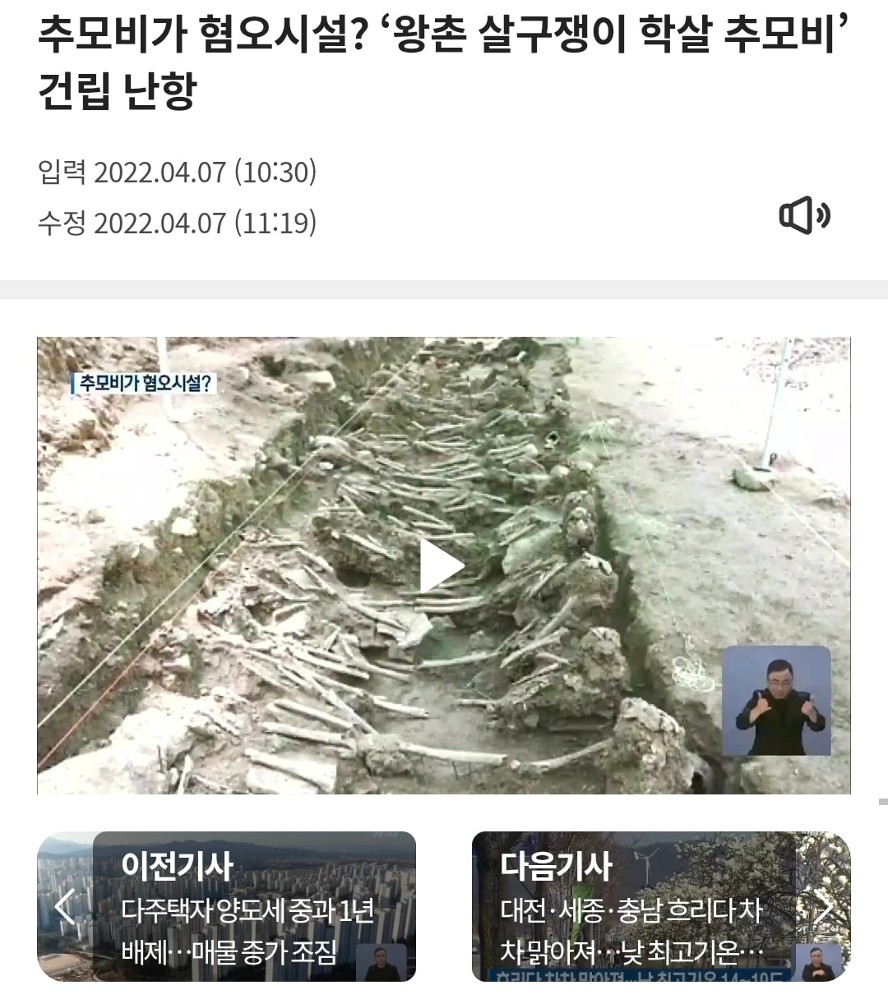
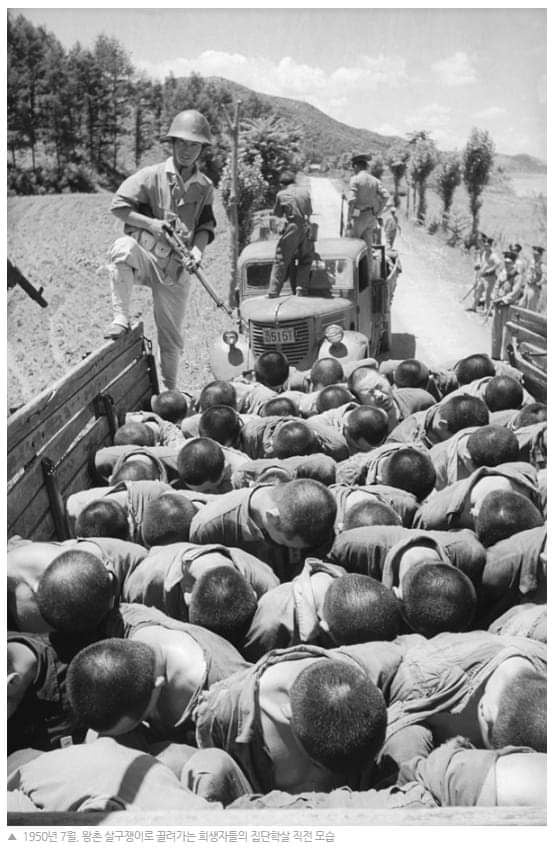
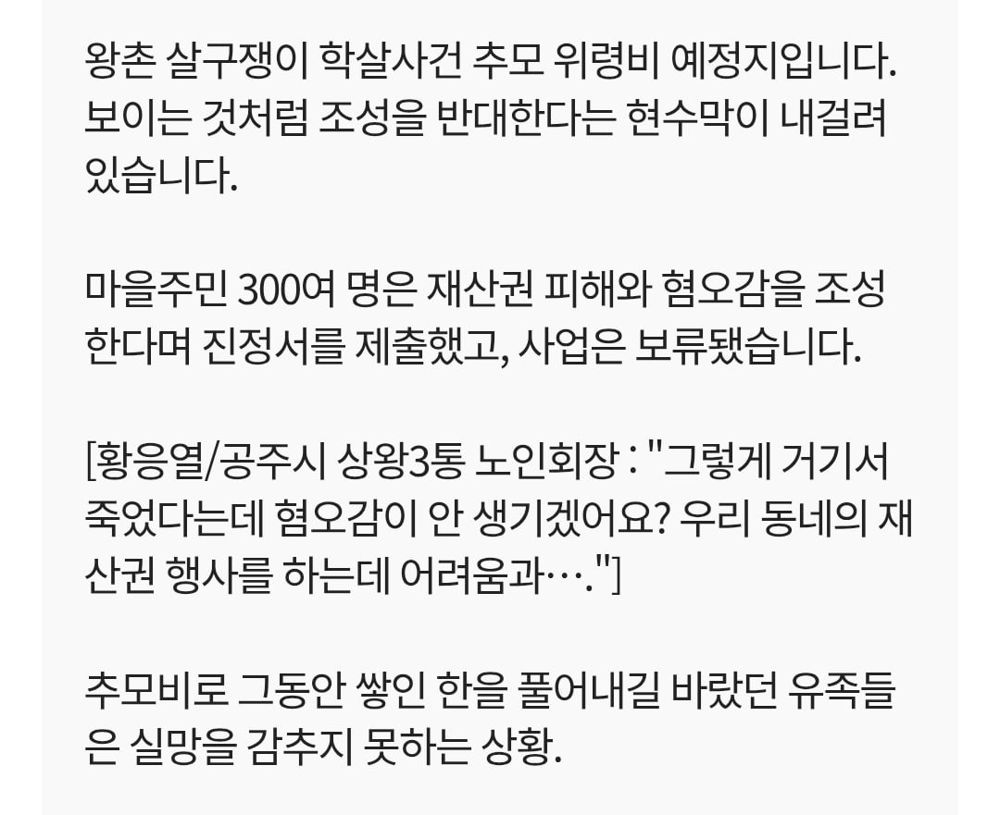

2022년에 벌어진 사건인데.... 왕촌 살구쟁이 학살 추모비를 건립 할려다 마을 주민들이 반대한 사건으로....

여기서 왕촌 살구쟁이는 6.25 당시 국군과 경찰이 공주교도소에 수감된 보도연맹원을 학살한 장소임.

그런데 해당 지역 주민들이 혐오시설이라며 반대한데다 상왕3통 노인회장이란 인간이 저딴 소리를 지껄임 ㅅㅂ....

2022년에 벌어진 사건인데.... 왕촌 살구쟁이 학살 추모비를 건립 할려다 마을 주민들이 반대한 사건으로....

여기서 왕촌 살구쟁이는 6.25 당시 국군과 경찰이 공주교도소에 수감된 보도연맹원을 학살한 장소임.

그런데 해당 지역 주민들이 혐오시설이라며 반대한데다 상왕3통 노인회장이란 인간이 저딴 소리를 지껄임 ㅅㅂ....
실제로 한국에선 그렇게 함
삼풍백화점 추모비가 그렇게 되었지
이런거 보면 일본인이랑 한국인들은 비슷한 점이 많은거 같애 같은 동양권인것 외에도
저자리에서 수백명이 죽었다는데 , 그리고 그걸 동네방네 모뉴먼트 설치해서 알리겠다는데 찝찝하지
나이 쳐먹었다는 것들이 저 지랄이니 아랫것들이 정상일리가 있나 ㅉㅉㅉ
그냥 돈달라는거지.
원혼 귀신 이런거 믿는 사람들이
아직 많으니까 반대하겠지
누가 보면 추모비가 씨발 뭐 김일성 동상 사이즈라도 되는 줄 알겠어요.
지 뒤지고 무덤도 못파게해야지 저럴거면
911 추모비도 부동산 가격을 위해서 다른곳에 지었어야되는데 한국인들이라면